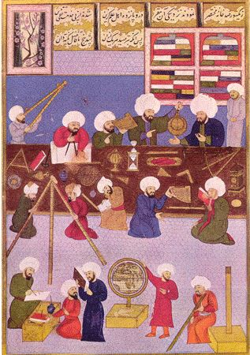
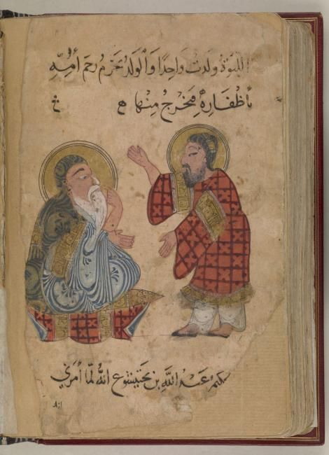
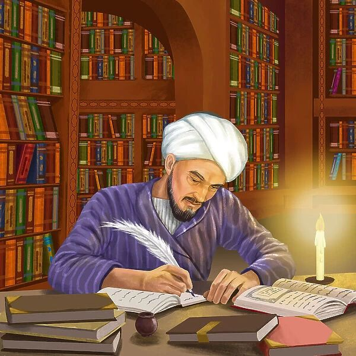
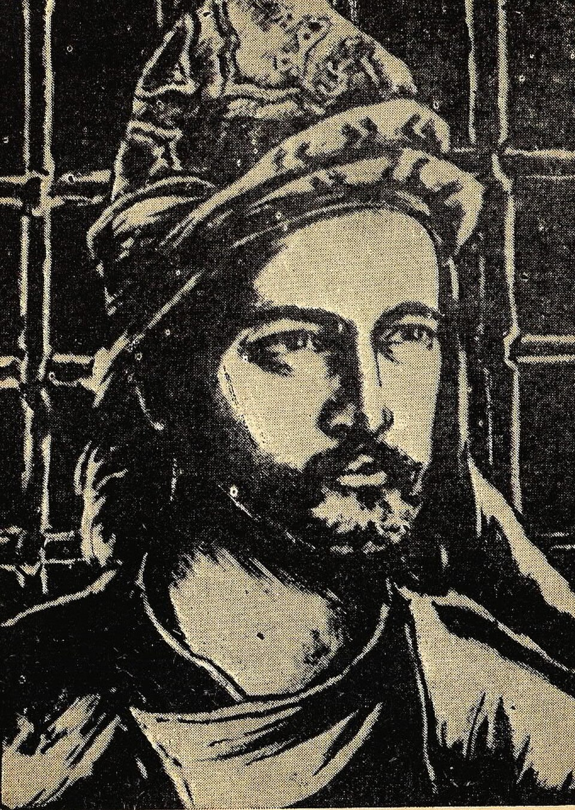
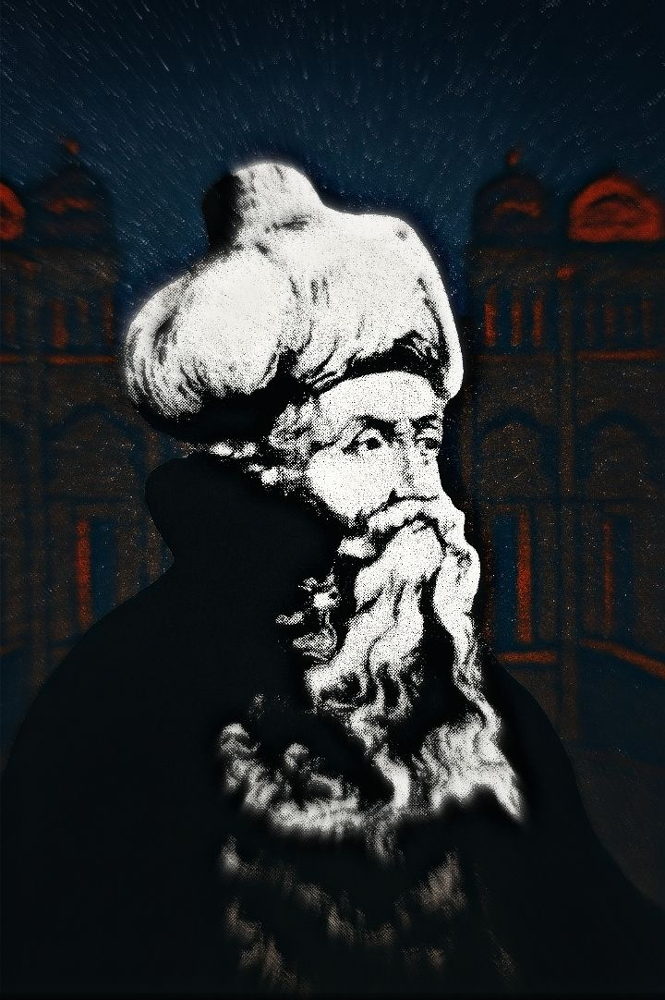

A tradition that preserved, translated, and transformed Greek
philosophy — and spent centuries wrestling with one enduring question:
how does reason relate to revelation?
Introduction
Islamic philosophy, often described through the Arabic term
falsafa — derived from the Greek philosophia —
developed within one of the most intellectually diverse civilizations of
the medieval world. From the 8th century onward, scholars working in
Arabic encountered and translated major works from Greek, Syriac,
Persian, and Indian intellectual traditions, while also developing new
approaches to logic, metaphysics, medicine, psychology, ethics,
politics, and the nature of knowledge. The result was not simply the
preservation of ancient philosophy, but the creation of an original
philosophical tradition that transformed the ideas it inherited and
carried them into new intellectual worlds.
Running through much of Islamic philosophy is a fundamental question
that remains philosophically important today: what is the proper
relationship between reason, reached through argument
and demonstration, and revelation, received through the
Quran and prophetic tradition? Different thinkers answered this question
in very different ways. Some attempted to show that genuine
philosophical truth and genuine revelation could not ultimately
conflict, while others argued that reason has definite limits when
addressing questions concerning God, creation, the soul, prophecy, and
the afterlife. These debates helped shape not only philosophy, but
theology, jurisprudence, mysticism, and scientific inquiry throughout
the Islamic intellectual tradition.
This page traces that story across nine major developments: the great
translation movement
that brought Greek philosophical and scientific works into Arabic; the
rational and metaphysical syntheses developed by thinkers such as
Al-Farabi and
Avicenna; and the famous debates
surrounding Al-Ghazali and
Averroes concerning the scope and
authority of philosophical inquiry. Yet Islamic philosophy cannot be
reduced to a simple conflict between philosophy and religion. Its
history includes continuing traditions of Avicennism, illuminationist
philosophy, Sufi metaphysics, philosophical theology, and later Persian
and Ottoman developments that extended far beyond the classical period
covered in these opening chapters.
The philosophical questions explored in this tradition were therefore
both inherited and newly formulated. What does it mean for something to
exist? Why is there a universe rather than nothing? Can the human
intellect know reality as it truly is? How does the soul relate to the
body? What makes God necessary rather than contingent? Can revelation
communicate truths that philosophy discovers independently, or does it
provide a distinct kind of knowledge unavailable to reason alone? By
pursuing such questions with extraordinary conceptual precision, Islamic
philosophers became central participants in the wider history of world
philosophy and profoundly influenced later
Jewish,Christian, and European
thought.
Timeline at a Glance
c. 750–950 CE
The Translation Movement brings major Greek philosophical and
scientific texts into Arabic, helping establish the intellectual
foundations of
falsafa.
872–950 CE
Life of Al-Farabi, later honored as the "Second Teacher" after
Aristotle for his systematic work in logic, metaphysics, political
philosophy, and the classification of the sciences.
980–1037 CE
Life of Avicenna (Ibn Sina), whose philosophical system reshapes
Islamic metaphysics and becomes influential across the Islamic world
and later medieval Europe.
1058–1111 CE
Life of Al-Ghazali, who critically examines the claims of the
philosophers while also helping integrate logic and Avicennian
concepts into later theological discourse.
1126–1198 CE
Life of Averroes (Ibn Rushd), whose defense and interpretation of
Aristotelian philosophy later becomes highly influential in Jewish
and Latin medieval intellectual traditions.
🏺 Before Falsafa: The World of the Early Caliphate

Baghdad became one of the major centers of scholarship, translation,
and intellectual exchange in the medieval Islamic world.
By the mid-8th century CE, the Islamic world had become one of the
largest and most culturally interconnected civilizations of its age,
extending from parts of the Iberian Peninsula and North Africa across
the Middle East toward Central Asia. Under the Abbasid Caliphate,
Baghdad emerged as a major center of political power, commerce,
scholarship, and intellectual exchange. Arabic became an important
language of learned communication, bringing scholars into contact with
Persian administrative traditions, Indian mathematics and astronomy,
Syriac Christian scholarship, and the extensive philosophical and
scientific heritage of the Greek-speaking world.
The encounter with Greek learning did not occur in an intellectual
vacuum. Long before the mature tradition of falsafa emerged, scholars in
the Islamic world were already debating questions about divine
attributes, human freedom, moral responsibility, prophecy, and the
interpretation of scripture. Greek philosophy therefore entered a
civilization that already possessed powerful religious and intellectual
traditions of its own. The ideas of
Aristotle,
Plato,Galen, and later Greek commentators were
consequently interpreted through new conceptual problems rather than
simply accepted as authoritative inheritances from the past.
One of the most important indigenous intellectual traditions was
kalam, or rational theology. Kalam differed from
falsafa in its starting points and institutional setting: theologians
generally began with questions raised by revealed doctrine and sought
rational methods for explaining or defending them, whereas the
philosophers associated with falsafa often adopted the demonstrative and
metaphysical frameworks inherited from the Greek philosophical sciences.
The boundary between these traditions, however, was never completely
fixed. Over time, philosophical concepts and logical methods entered
theological debate, while philosophers themselves developed detailed
theories of prophecy, divine knowledge, and religious law.
The intellectual world from which Islamic philosophy emerged was
therefore multilingual, multicultural, and deeply interconnected.
Muslim, Christian, Jewish, and other scholars participated at different
stages in the transmission and development of philosophical knowledge.
Translation created access to earlier traditions, but commentary,
criticism, and original composition created something new: a
philosophical culture capable of asking whether Aristotle had understood
existence correctly, whether Plato's political ideal could illuminate
prophecy, and whether human reason could establish truths about God and
the structure of reality through demonstration alone.
1️⃣ The Translation Movement
Preserving and Transforming Greek Thought

Scholars working across linguistic and religious traditions translated
major works of philosophy, medicine, astronomy, and mathematics into
Arabic, sometimes through earlier Syriac versions.
The foundation of classical Islamic philosophy was an extraordinary
process of intellectual translation that unfolded principally between
the 8th and early 10th centuries. Major works of Greek philosophy and
science became available in Arabic, including writings associated with
Aristotle, Plato, Galen, Ptolemy, Euclid, and numerous later
commentators. Translation was often a complex process involving Greek
and Syriac manuscripts, and scholars from different religious
communities contributed to the work. This movement was supported in
various ways by wealthy patrons and members of the Abbasid elite, while
Baghdad became one of its most important intellectual centers.
The famous House of Wisdom, or Bayt al-Hikma, became
associated with the scholarly culture of Abbasid Baghdad, although the
wider translation movement was not confined to a single institution.
Philosophical and scientific texts circulated through networks of
scholars, translators, physicians, libraries, courts, and educational
communities. The significance of this movement lies not merely in the
number of books translated, but in the creation of a new Arabic
philosophical vocabulary capable of expressing difficult concepts
concerning substance, form, causation, intellect, soul, necessity,
possibility, and existence.
Translation also required interpretation. Greek philosophical
terminology did not always possess exact equivalents in Arabic, and
translators had to make conceptual decisions that influenced the later
development of philosophy. Moreover, the Arabic philosophers did not
inherit a perfectly unified version of "Greek philosophy." Aristotelian
works circulated alongside Platonic and Neoplatonic materials, sometimes
under misleading titles or attributions. The result was a distinctive
intellectual synthesis in which Aristotle was frequently interpreted
through late-antique Neoplatonic frameworks, creating philosophical
systems that differed in important respects from Aristotle's own
thought.
The translation movement therefore did far more than preserve ancient
texts. It created the conditions for original philosophical inquiry.
Thinkers such as Al-Kindi, Al-Farabi, Avicenna, and later Averroes did
not simply repeat Aristotle; they criticized inherited arguments,
reorganized the sciences, developed new theories of intellect and
existence, and applied philosophical reasoning to questions raised
within Islamic civilization. The movement ultimately helped make Arabic
one of the great philosophical languages of the medieval world and
prepared the intellectual foundations for centuries of debate about
reason, revelation, science, and metaphysics.
2️⃣ The Rationalist Synthesis
Al-Farabi, Avicenna, and Systematic Philosophy

Al-Farabi, honored by later thinkers as the "Second Teacher" after
Aristotle, helped establish one of the most systematic traditions of
philosophy in the Islamic world.
Al-Farabi (c. 872–950 CE), later honored as
the "Second Teacher" after Aristotle,
played a decisive role in organizing philosophy into a systematic
intellectual discipline. He wrote on logic, metaphysics, psychology,
music, political philosophy, and the classification of the sciences,
while seeking to explain how apparently different philosophical
traditions could be understood within a coherent framework. His thought
drew upon Aristotle and late-antique Platonism, but his philosophical
project was shaped by questions that had become especially urgent within
the Islamic intellectual world, including prophecy, religion, political
authority, and the structure of human happiness.
One of Al-Farabi's most distinctive concerns was the relationship
between philosophical knowledge and revealed religion. Drawing
inspiration from Platonic political philosophy, he described the ideal
community as one guided toward genuine human flourishing and ultimate
happiness. The highest ruler would possess exceptional intellectual and
moral capacities, combining philosophical understanding with the ability
to communicate truth to a wider community through symbols, images, laws,
and practical guidance. This framework allowed Al-Farabi to treat
prophecy and philosophy not simply as rival sources of knowledge, but as
different modes through which truth might become available to different
audiences.
Avicenna (Ibn Sina, 980–1037 CE) carried
systematic philosophy to an even greater level of conceptual
development. His enormous body of work included
The Book of Healing, despite its title a vast philosophical
encyclopedia covering logic, natural science, mathematics, psychology,
and metaphysics. Avicenna inherited much from Aristotle and Al-Farabi,
but his philosophy cannot accurately be described as simple
Aristotelianism. He reorganized metaphysics around a powerful analysis
of being, necessity, and causation that would influence Islamic, Jewish,
and Latin Christian philosophy for centuries.
Central to Avicenna's metaphysics is the distinction between
essence — what a thing is — and
existence — the fact that it is. For ordinary
contingent things, essence does not by itself guarantee existence: a
horse, tree, or human being can be conceived without thereby existing.
Such beings therefore require an explanation for their existence.
Avicenna developed this insight into his famous account of the
Necessary Existent, a being whose existence is not
dependent upon another cause and whose reality is necessary rather than
contingent. This metaphysical analysis became one of the most
influential philosophical arguments concerning the nature of God in the
medieval world.
Avicenna also developed sophisticated theories of the soul, knowledge,
and intellect. His famous "Flying Man" thought experiment asks us to
imagine a person created fully formed but suspended in empty space
without sensory contact with the external world; Avicenna argues that
such a person would nevertheless possess awareness of his own existence.
The argument has been interpreted in different ways, but it demonstrates
Avicenna's attempt to investigate self-awareness independently of
ordinary bodily sensation. His philosophy thus joined metaphysical
questions about existence with psychological questions about
consciousness and the nature of the self.
The systematic confidence of Al-Farabi and Avicenna represents one of
the great achievements of classical falsafa. Their philosophical systems
sought rational explanations for the structure of reality, the hierarchy
of being, the powers of the human soul, and the possibility of
knowledge, while also accounting for prophecy and religious life.
Avicenna's synthesis became extraordinarily influential in the eastern
Islamic world, where philosophical traditions continued to develop long
after the classical period. His ideas also entered Jewish and Latin
Christian philosophy through translation, helping shape medieval debates
about God, existence, the soul, and the limits of human reason.
3️⃣ Reason vs. Revelation
Al-Ghazali's Critique and Averroes's Defense
Al-Ghazali's Incoherence of the Philosophers became one of
the most influential critiques of the metaphysical claims associated
with Avicennian philosophy.
Al-Ghazali (traditionally dated 1058–1111
CE) was one of the most influential intellectual figures in Islamic
history: a theologian, jurist, philosopher, and mystic whose work cannot
be reduced to simple hostility toward reason. After achieving a
prestigious academic position, he underwent a profound intellectual and
spiritual crisis and later reflected critically on the different paths
through which human beings claim to attain certainty. His philosophical
writings show a detailed knowledge of the arguments of the
falasifa, especially the systems associated with
Al-Farabi and
Avicenna.
In The Incoherence of the Philosophers, Al-Ghazali examined and
criticized a number of metaphysical positions associated with the
philosophers. His objections addressed questions such as whether the
world has an eternal past, how divine knowledge relates to particular
events, and the nature of bodily resurrection. His criticism was
therefore directed primarily against specific philosophical conclusions
and demonstrations rather than against every use of logic or rational
analysis. Indeed, Al-Ghazali's later influence helped encourage the
wider use of logical and philosophical methods within Islamic
theological traditions.
One of the deepest philosophical issues raised by Al-Ghazali concerns
causation. When one event regularly follows another —
fire touching cotton, for example, followed by burning — do we possess
rational grounds for saying that the first event necessarily produces
the second? Al-Ghazali challenged the assumption that observed
regularity alone proves a necessary causal connection between created
things. His discussion became an important contribution to later debates
about necessity, natural law, divine power, and the limits of inductive
reasoning. The question remains relevant to modern philosophy: does
science discover necessary connections in nature, or does it describe
stable patterns that might, in principle, have been otherwise?
Al-Ghazali's intellectual journey also led him toward
Sufism, which he regarded as essential to a fuller
understanding of religious truth and spiritual transformation. For him,
philosophical argument could perform important intellectual work, but
rational demonstration alone could not exhaust every dimension of human
knowledge. His writings therefore combined logical analysis with
theology, ethics, jurisprudence, and spiritual psychology. This
complexity is important because the older claim that Al-Ghazali simply
"ended Islamic philosophy" is historically misleading: Avicennian
philosophy continued and developed in the Islamic world long after his
death, particularly in eastern intellectual traditions.
Roughly a century later,
Averroes (Ibn Rushd, 1126–1198 CE), writing
in Al-Andalus, produced the most famous philosophical response to
Al-Ghazali's critique. In The Incoherence of the Incoherence,
he defended many Aristotelian philosophical positions and carefully
examined Al-Ghazali's objections. Averroes believed that truth cannot
genuinely contradict truth. If philosophical demonstration establishes
something with certainty and a scriptural passage appears to conflict
with it, the apparent contradiction requires interpretation rather than
the abandonment of reason.
Averroes therefore developed a sophisticated account of the relationship
between philosophy and revelation. Human beings do not all approach
knowledge through the same intellectual methods: some are persuaded
primarily through rhetorical language and imagery, others through
dialectical argument, while the philosophically trained can pursue
demonstrative reasoning. Religious language could communicate truth to a
broad community, while philosophy investigated reality through rigorous
demonstration. This did not mean, as is sometimes claimed, that Averroes
defended two contradictory truths; rather, he attempted to explain how
different forms of discourse could relate to a single reality.
Averroes's influence eventually became especially powerful outside the
Islamic West through the translation of his extensive commentaries on
Aristotle into Hebrew and Latin. These works entered the developing
universities of medieval Europe and helped transform debates about the
intellect, the eternity of the world, causation, and the relationship
between philosophy and theology. His reception contributed to movements
later described as Averroism and brought his interpretations into
conversation — and sometimes conflict — with major Christian
philosophers such as Thomas Aquinas. The legacy of this debate
demonstrates that the question of reason and revelation did not end with
Al-Ghazali and Averroes; it continued across Islamic, Jewish, and
Christian intellectual traditions for centuries.
4️⃣ Al-Kindi and the Birth of Arabic Philosophy
The First Philosopher of the Islamic World
Al-Kindi helped establish philosophy as an Arabic intellectual
discipline by adapting Greek philosophical ideas to the questions of
the early Islamic world.
Before Al-Farabi and Avicenna constructed their great philosophical
systems, Ya'qub ibn Ishaq al-Kindi, who flourished during the 9th
century, helped establish philosophy as a serious intellectual
discipline in Arabic. Later known as the "Philosopher of the Arabs,"
Al-Kindi worked during the early Abbasid period, when the translation of
Greek scientific and philosophical texts was transforming the
intellectual culture of Baghdad. He wrote on metaphysics, logic,
mathematics, astronomy, medicine, music, optics, and cryptography,
demonstrating the extraordinarily broad meaning that philosophy
possessed in the medieval world.
Al-Kindi believed that truth should be
welcomed regardless of where it was discovered. Greek philosophy, in his
view, did not have to be rejected because it came from a pre-Islamic
civilization. Instead, philosophical knowledge could be examined,
corrected, and incorporated into a wider search for truth. This attitude
became one of the defining characteristics of falsafa: the willingness
to engage seriously with earlier intellectual traditions while refusing
to treat inherited authority as the final answer to philosophical
questions.
His metaphysical writings attempted to reconcile philosophical reasoning
with Islamic belief in divine unity and creation. Al-Kindi strongly
emphasized the absolute oneness of God and rejected the idea that the
world possessed an infinite past in the same way that some
interpretations of Greek philosophy appeared to suggest. For him, the
universe was created and dependent upon a first cause. Philosophy could
therefore investigate the structure of reality rationally without
eliminating the need for a creator beyond the changing and contingent
world.
Al-Kindi also played an important role in transforming philosophical
terminology into Arabic. The process was not merely linguistic.
Translating concepts such as substance, intellect, form, cause, and
nature required scholars to determine how these ideas should function
within a new intellectual environment. The philosophical vocabulary
developed during this period later became the foundation upon which
thinkers such as Al-Farabi and Avicenna built far more elaborate
systems.
Although Al-Kindi's philosophical system was less comprehensive than
those of his later successors, his historical importance is enormous. He
stands at the beginning of the Arabic philosophical tradition as a
thinker who demonstrated that the sciences of the Greeks could become
instruments of original inquiry within Islamic civilization. His work
opened the path for the systematic study of logic, metaphysics,
mathematics, and natural philosophy that would reach extraordinary
sophistication in the centuries that followed.
5️⃣ Illuminationism
Suhrawardi and the Philosophy of Light

Suhrawardi developed Illuminationist philosophy, using the symbolism
of light to explain reality, knowledge, and the hierarchy of
existence.
By the 12th century, Avicenna's philosophical system had become so
influential that later thinkers increasingly defined their own positions
in relation to it. One of the most original critics and successors of
the Avicennian tradition was Shihab al-Din Yahya al-Suhrawardi
(1154–1191), the founder of Illuminationist, or
Ishraqi, philosophy. Trained in the dominant Peripatetic
tradition, Suhrawardi accepted the importance of rational argument but
argued that discursive reasoning alone could not provide the fullest
form of philosophical knowledge. :contentReference[oaicite:1]{index=1}
The central metaphor of Suhrawardi's philosophy is
light. Light represents what is most immediately
manifest and requires no further explanation in order to become known.
Reality, in his metaphysical system, can be understood as a hierarchy
extending from the supreme Light of Lights through different degrees of
luminous and less luminous beings. Darkness, by contrast, represents
deficiency, opacity, and dependence. Through this symbolism, Suhrawardi
developed an alternative way of thinking about existence that differed
significantly from the dominant metaphysical language of Avicennian
Peripateticism.
His theory of knowledge was equally important. Suhrawardi argued that
not all knowledge consists in forming concepts or representations of
external objects. Some forms of awareness are immediate: the self, for
example, possesses a direct awareness of itself that does not depend
upon constructing a mental image of the self. This approach became
associated with
knowledge by presence, the idea that certain realities
are known through direct presence rather than through conceptual
representation. The distinction would become deeply influential in later
Islamic philosophy.
Suhrawardi also introduced a complex
cosmological vision that included an
imaginal realm between purely intelligible reality and
the ordinary material world. This idea provided a philosophical
framework for understanding dreams, visions, symbolic experiences, and
certain forms of spiritual perception without reducing them simply to
physical events or abstract concepts. His philosophy therefore connected
metaphysics, epistemology, psychology, and mystical experience within a
single intellectual system.
Illuminationism did not replace Avicennian philosophy, but it opened a
new direction for philosophical thought in the Islamic East.
Suhrawardi's works continued to be studied and developed for centuries,
particularly in Persian intellectual traditions. Later philosophers drew
simultaneously on Avicennan metaphysics, Illuminationist theories of
knowledge, Sufi metaphysics, and theological reasoning, making
Suhrawardi one of the major bridges between classical falsafa and the
later philosophical traditions of the Islamic world.
:contentReference[oaicite:2]{index=2}
6️⃣ Philosophy in Al-Andalus
Ibn Bajja, Ibn Tufayl, and the Search for Knowledge
While Avicennian philosophy continued to develop primarily in the
Islamic East, another important philosophical tradition emerged in
Al-Andalus, Muslim-ruled regions of the Iberian
Peninsula. Andalusian philosophers worked within the broader traditions
of Greek and Islamic thought but developed their own distinctive
concerns regarding the relationship between the individual, society,
nature, and intellectual perfection. The region eventually produced
thinkers whose works would have a profound influence on Jewish and Latin
Christian philosophy.
Ibn Bajja, known in Latin as Avempace, was
among the earliest major philosophers of this Andalusian tradition. He
explored the problem of how an intellectually serious individual could
pursue truth within an imperfect or corrupt political environment. His
idea of the solitary thinker did not necessarily mean complete physical
isolation; rather, it concerned the possibility that a philosopher might
have to preserve intellectual and moral independence when society itself
failed to embody the highest forms of rational and ethical life.
Ibn Tufayl developed related questions
through one of the most remarkable philosophical narratives of the
medieval world, Hayy ibn Yaqzan. The story follows a human
being who grows up in isolation and gradually discovers the workings of
the natural world through observation, reflection, and rational
investigation. Hayy eventually moves from empirical knowledge toward
metaphysical understanding and spiritual contemplation, raising a
fundamental philosophical question: how much can the human mind discover
about reality without formal instruction, social tradition, or revealed
teaching?
The philosophical significance of Hayy ibn Yaqzan lies in its
exploration of the relationship between experience, reason, and
revelation. The story does not simply claim that religion is
unnecessary. Instead, it examines whether independently discovered
philosophical truth can ultimately correspond with truths communicated
through religious tradition. When Hayy encounters human society, he
discovers that the abstract truths he has reached through solitary
inquiry cannot always be communicated directly to ordinary communities,
whose moral and intellectual needs may require symbols, laws, stories,
and social institutions.
Andalusian philosophy therefore prepared the intellectual setting in
which Averroes would later produce his great defense of Aristotelian
inquiry. The philosophical tradition of Al-Andalus demonstrates that
Islamic philosophy was never confined to a single city or school. From
Baghdad to Cordoba and beyond, thinkers developed different answers to
the question of how the human intellect should pursue truth and how
philosophical understanding should relate to the wider social and
religious world.
7️⃣ Sufism and Philosophical Mysticism
Ibn Arabi and the Metaphysics of Reality

Ibn Arabi developed one of the most influential metaphysical
traditions associated with Sufism, exploring the relationship between
divine reality, the cosmos, and human knowledge.
Islamic philosophy was not limited to the rational systems of the
Peripatetic philosophers. Alongside falsafa developed the rich
intellectual traditions associated with Sufism, in
which the transformation of the self and direct knowledge of God became
central concerns. Although mystical experience and philosophical
demonstration can appear to represent opposing methods, many later
Islamic thinkers attempted to combine them. Mystical philosophy became a
persistent and systematic dimension of Islamic intellectual life rather
than simply an alternative to philosophical inquiry.
:contentReference[oaicite:3]{index=3}
One of the most influential figures in this development was
Ibn Arabi (1165–1240),
whose writings explored the relationship between God, existence,
knowledge, imagination, and the human being. His philosophical and
mystical vocabulary is complex and has been interpreted in many
different ways, but a central concern of his work is the relationship
between the absolute reality of God and the multiplicity of forms that
appear within the created world. How can reality appear as many things
while ultimately depending upon a single divine source?
Ibn Arabi described existence as possessing different levels or modes of
manifestation. The visible world is not independent of the divine
source, yet neither can the distinction between creator and creation
simply be ignored. His metaphysical writings therefore attempt to
explain how unity and multiplicity can coexist within a single account
of reality. Later interpreters associated aspects of his thought with
the expression
wahdat al-wujud, often translated as the "unity of
being," though the exact meaning and application of this term remain
subjects of scholarly debate.
Another important concept in Ibn Arabi's thought is the role of
imagination. Imagination is not merely fantasy or
unreality; it can function as an intermediate mode through which
realities become manifest in symbolic forms. Dreams, visions, religious
symbols, and imaginative perception therefore acquire philosophical
importance. This approach influenced later discussions of knowledge and
reality, especially when combined with Suhrawardi's theories concerning
the imaginal world.
Ibn Arabi's influence extended far beyond his own lifetime. His
metaphysical ideas entered philosophical, theological, and mystical
debates throughout the Islamic world and later became one of the major
intellectual resources used by thinkers attempting to reconcile rational
philosophy with spiritual intuition. The later synthesis achieved by
philosophers such as Mulla Sadra would draw upon both Avicennian
reasoning and traditions of mystical metaphysics, demonstrating that the
history of Islamic philosophy continued through the interaction rather
than the separation of reason and spiritual experience.
:contentReference[oaicite:4]{index=4}
8️⃣ Post-Classical Philosophy and Kalam
Fakhr al-Din al-Razi and the Transformation of Debate
Fakhr al-Din al-Razi represents the increasingly close interaction
between philosophical reasoning and rational theology in
post-classical Islamic thought.
The death of Averroes did not mark the end of Islamic philosophy. In the
Islamic East, philosophical inquiry continued through increasingly
complex interactions between falsafa and
kalam. The period following Avicenna witnessed intense
criticism, revision, and development of Avicennian ideas rather than
their simple abandonment. Philosophers and theologians debated the
nature of existence, the structure of physical reality, the human soul,
divine attributes, causation, and the possibility of certain knowledge.
One of the most important figures in this transformation was
Fakhr al-Din al-Razi (1149–1210). Trained within the traditions of Islamic theology, Al-Razi
nevertheless possessed an extensive knowledge of Avicennian philosophy
and devoted much of his intellectual career to examining its arguments.
His writings do not fit neatly into the simple categories of either
philosopher or opponent of philosophy. Instead, they demonstrate how
philosophical concepts had become deeply embedded within theological and
intellectual debate. :contentReference[oaicite:5]{index=5}
Al-Razi examined nearly every major part of the Avicennian philosophical
system, including questions concerning definitions, essence and
existence, the principles of natural philosophy, the unity of the human
soul, and the foundations of ethical judgment. He was willing to expose
weaknesses and unresolved tensions in earlier arguments, but criticism
did not mean a rejection of rational inquiry itself. His work
illustrates a broader development in post-classical Islamic thought:
philosophical reasoning increasingly became part of theological
education and scholarly argument.
This transformation challenges the older historical narrative according
to which Islamic philosophy supposedly disappeared after Al-Ghazali.
What changed was partly the institutional and intellectual form through
which philosophy continued. Metaphysical and logical questions
increasingly appeared within works of theology, Quranic interpretation,
jurisprudence, and scientific inquiry. The boundaries between
"philosophy" and "theology" therefore became more difficult to draw
sharply, particularly when theologians employed philosophical arguments
while criticizing particular philosophical conclusions.
Post-classical Islamic thought thus represents continuity as well as
change. The questions raised by Al-Farabi and Avicenna remained alive,
but later thinkers approached them with greater awareness of the
objections developed by theologians, mystics, and rival philosophical
schools. This environment eventually produced new syntheses in Persia
and the wider Islamic East, culminating in philosophical systems that
attempted to combine logical demonstration, Illuminationist insight,
mystical knowledge, and revealed tradition within a more comprehensive
understanding of wisdom. :contentReference[oaicite:6]{index=6}
9️⃣ Mulla Sadra and Transcendent Philosophy
The Continuing Life of Islamic Philosophy
Mulla Sadra created a major synthesis of Avicennian philosophy,
Illuminationism, mystical metaphysics, and Islamic theological
thought.
One of the clearest demonstrations that Islamic philosophy did not end
with the classical period is the work of
Mulla Sadra, or Sadr al-Din Muhammad Shirazi (c. 1571–1636). Working in Safavid
Iran, Mulla Sadra became one of the most influential philosophers of the
later Islamic world. His philosophical project drew together several
major intellectual traditions: Avicennian metaphysics, Suhrawardi's
Illuminationism, mystical ideas associated with
Ibn Arabi, theological reasoning, and Shi'i
religious thought. The result was a synthesis he described as
Transcendent Philosophy, or
al-hikma al-muta'aliya. :contentReference[oaicite:7]{index=7}
At the center of Mulla Sadra's philosophy stands a radical
reconsideration of existence. Earlier philosophical
debates had often concentrated on the relationship between essence and
existence. Mulla Sadra argued for the fundamental reality or primacy of
existence, while treating essences as ways through which the intellect
conceptualizes and classifies reality. Existence itself is not a single
uniform thing distributed equally among all beings; it appears in
different degrees of intensity and perfection, forming a hierarchical
and dynamic structure of reality.
Another famous doctrine associated with Mulla Sadra is
substantial motion. Earlier Aristotelian philosophy had
generally understood change as occurring primarily through qualities,
quantities, locations, or other accidental features while the underlying
substance remained stable. Mulla Sadra argued more radically that change
belongs to the very substance of the material world. Reality is
therefore dynamic at a fundamental level. The universe is not simply a
collection of permanently fixed substances undergoing external
alterations; it is a continuous process of becoming.
Mulla Sadra also attempted to overcome the sharp division between
rational philosophy and mystical intuition. Logical argument remained
necessary, but philosophy could not be reduced to abstract reasoning
detached from the transformation of the person seeking wisdom. Genuine
philosophical knowledge required intellectual discipline together with
spiritual development and deeper awareness of reality. His approach
therefore treated philosophy not only as a body of propositions but also
as a way of life directed toward wisdom and the perfection of the human
being. :contentReference[oaicite:8]{index=8}
His major work, commonly known as The Four Journeys, presents
philosophy as a journey through different dimensions of reality,
including the relationship between the self, God, the cosmos, knowledge,
and the final destiny of human beings. The work demonstrates the
extraordinary breadth of later Islamic philosophy: metaphysics,
psychology, theology, mystical experience, and scriptural interpretation
are treated as interconnected rather than completely separate
disciplines.
Mulla Sadra's legacy is particularly important because his philosophy
became deeply influential in later Persian and Shi'i intellectual
traditions. Islamic philosophy therefore possesses a much longer history
than the familiar narrative that begins with the translation movement
and ends with Averroes. From the Abbasid philosophers of Baghdad to
Illuminationist thinkers, Sufi metaphysicians, post-classical
theologians, and the philosophical schools of Safavid Iran, the
tradition continued to develop new answers to some of philosophy's
oldest questions: What is existence? How is knowledge possible? What is
the relation between mind and reality? And how can human reason,
spiritual experience, and revelation contribute to the search for truth?
:contentReference[oaicite:9]{index=9}
👤 Major Thinkers
The key figures behind each chapter of this era, in brief.
📚 The Translation Movement — the large-scale
reception, translation, revision, and critical development of Greek
philosophical and scientific learning within the Arabic-speaking
intellectual world
👑 The Philosopher-Prophet — Al-Farabi's attempt to
explain how philosophical knowledge, political leadership, prophecy,
law, and the moral education of society might be brought into a
coherent order
⚖ Essence & Existence — Avicenna's influential
distinction between what a thing is and the fact that it exists, a
distinction that became central to later Islamic and medieval
metaphysics
🎯 The Necessary Existent — Avicenna's conception of
an ultimate reality whose existence depends on nothing else and from
which the existence of contingent beings ultimately depends
❓ Philosophy's Limits — Al-Ghazali's challenge to
the claim that philosophical demonstration alone can settle every
metaphysical and theological question
🤝 Reason–Revelation Compatibility — the continuing
debate over whether philosophical reasoning and revealed truth
represent competing authorities or different paths toward a single
reality
🌍 Influence on Later Philosophy
Islamic philosophy became one of the major intellectual bridges
connecting the ancient Mediterranean world with the philosophical
cultures of the medieval and early modern periods. Arabic philosophical
writing did not merely carry Greek texts from one civilization to
another: thinkers such as Al-Farabi, Avicenna, and Averroes transformed
inherited concepts and created new problems that later philosophers had
to confront. Through translation into Latin and Hebrew, their works
entered Jewish and Christian intellectual traditions and became
important sources for medieval debates about God, causation, the soul,
knowledge, and the relationship between philosophy and theology.
Avicenna's metaphysics had a particularly wide influence, shaping
Islamic philosophical traditions and provoking sustained responses from
theologians and philosophers who either adopted, modified, or rejected
aspects of his system. Averroes's extensive engagement with Aristotle
became highly influential in medieval Europe, where his commentaries
were studied in universities and contributed to controversies
surrounding the autonomy of philosophical reasoning. Thomas Aquinas
engaged critically with both Avicennian and Averroist ideas while
developing his own synthesis of Aristotelian philosophy and Christian
theology.
Within the Islamic world, however, philosophy did not simply disappear
after the classical debate between Al-Ghazali and Averroes. That
familiar story is too simple. Philosophical inquiry continued and
developed through later traditions including Illuminationism, associated
with Suhrawardi, and the Safavid-era synthesis known as Transcendent
Philosophy, associated with Mulla Sadra. At the same time, kalam,
Sufism, medicine, astronomy, logic, and jurisprudence continued to
provide intellectual settings in which philosophical questions about
reality and knowledge could be explored.
The long-term significance of Islamic philosophy therefore lies not only
in its historical role in transmitting ancient learning but in its
original contribution to the global history of ideas. Its philosophers
asked how reason can demonstrate truth, whether existence requires an
ultimate cause, how the human intellect knows reality, what
distinguishes philosophical knowledge from prophetic knowledge, and
whether spiritual experience can reach forms of understanding
unavailable to abstract argument alone. These questions continued to
shape philosophical traditions far beyond the medieval Islamic world.
📊 Quick Facts
Time Period: c. 8th century CE onward, with the
classical period of falsafa flourishing especially between the 9th and
12th centuries and major philosophical traditions continuing long
afterward.
Key Region: Baghdad, Persia and Central Asia, Egypt
and the eastern Mediterranean, Al-Andalus, North Africa, and the wider
intellectual world connected through Arabic, Persian, and later other
Islamic scholarly traditions.
Major Movements: Falsafa, Kalam, Sufism,
Illuminationism, and later Transcendent Philosophy, alongside
important philosophical developments within medicine, science, logic,
and jurisprudence.
Central Question: How do reason, revelation,
experience, and spiritual insight relate to one another in the human
search for truth about God, reality, and the nature of knowledge?
Successor Traditions: Post-Avicennian philosophy,
Illuminationism, later Persian philosophy, Transcendent Philosophy,
Jewish philosophy, and medieval Latin scholasticism.
As Islamic scholars debated reason and revelation, Christian Europe was
working through remarkably similar questions of its own — how newly
rediscovered Greek philosophy, much of it transmitted through exactly
the Arabic commentaries explored here, could be reconciled with
Christian doctrine.